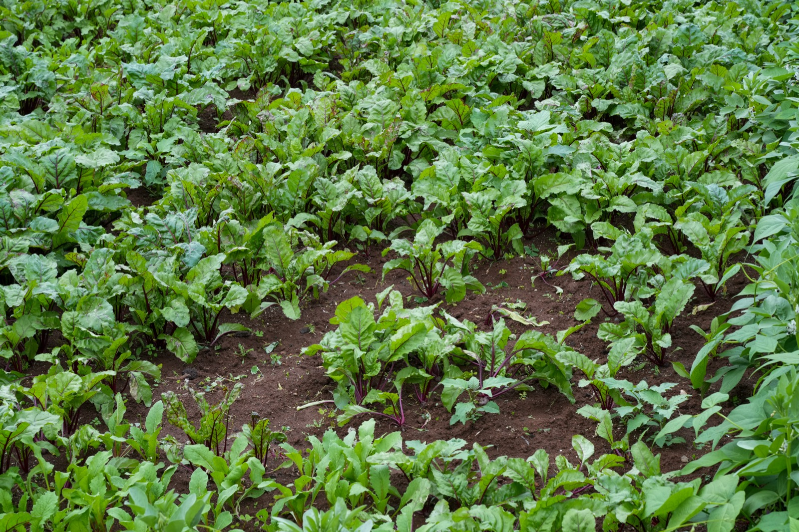

| Kingdom | Plantae |
|---|---|
| Family | Amaranthaceae |
| Genus | Beta |
| Species | Beta vulgaris |
| Scientific name | Beta vulgaris |
| Type | Biennial root herb grown as an annual |
| Category | Vegetable Plants |
Habitat & Growing Conditions
- Cool-season crop in loose fertile soil where the swollen root can develop.
- Basal leaves and a swollen red, purple, golden, or striped storage root; flowering occurs in the second year.

Biodiversity Value
- Mature flowers support small pollinating insects.
Economic & Ecological Importance
- Root and leaves are eaten fresh, cooked, pickled, or processed as food colour.
Medicinal Importance
- A nutritious vegetable; concentrated beet products should be used with medical advice when relevant.
Field Notes
- Conservation Status: Not evaluated (NE) - IUCN Red List
Visual record